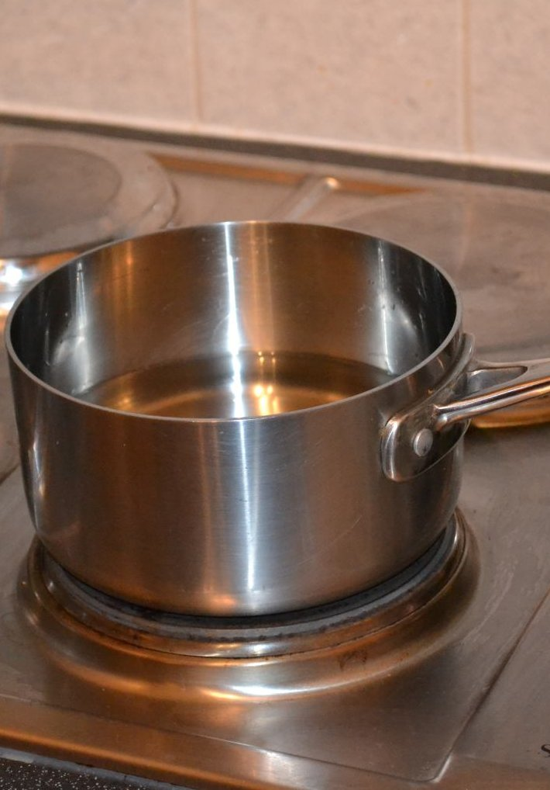
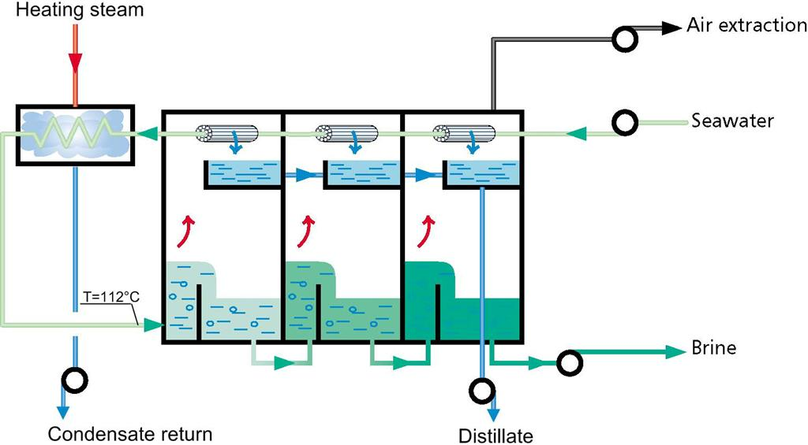

Evaporators 2

- In the last lecture we studied an evaporator.
- Given the feed stream and outlet specification, we used a total and solids mass balance to determine the outlet vapour and liquid flowrates: \begin{align*} F &= L + V & x_{s,F} F &= x_{s,L} L \end{align*}
- We then needed the duty of the evaporator which we performed an energy balance to find: \begin{align*} Q &= L h_L + V h_V - F h_F \end{align*}
- Here, we used some heavy approximation to estimate the enthalpies ($h_X$) of the streams, but we must improve upon this calculation.
- The first question is at what temperature do we evaluate the outlet stream properties? (the inlet temperatures will be specified)
- In long-tube evaporators (right), the fluid temperature will vary along the tube.
-
This is because the liquid phase concentration
increases along the pipe length.
(Note: the steam temperature will remain constant as it is relatively pure) - However, at the end of the tube we can assume the liquid and vapour phases are in equilibrium.
- Therefore, we can say the outlet temperature is the boiling point of the outlet stream.
- In short-tube type evaporators, the temperature will vary inside the fluid to facilitate convection.
- But this temperature difference will not be very large.
- It is not unreasonable to assume the fluid is well-mixed.
-
Well-mixed then implies
the concentration inside
the evaporator is the same as the outlet stream.
(Note: You will reuse the well-mixed assumption when you encounter CSTR reactors) - This implies again that the outlet temperature is the boiling point of the outlet stream.
- So in all cases we evaluate the outlet stream enthalpies at the outlet concentration boiling temperature.
- We need information on the boiling point of mixtures…

- Whenever a non-volatile solute is added to a solvent the boiling point is elevated.
- This boiling-point elevation is analogous to the freezing-point depression.
- If we add salt to ice, the ice begins to melt as its freezing temperature is lowered below the ambient temperature.
- If salt is added to water, its boiling point is increased.
- You may feel this runs contrary to your own experiences of boiling in the kitchen (think pasta).
- But for NaCl (table salt), you would need to add around $\sim0.25$ kg of salt to a litre of water to increase its boiling point by $\sim2^\circ$ C, so this effect is not visible in the kitchen.
- If the water in the pan boils when you add salt, it may be that you have clean and smooth pans.
- The liquid in the pan could then superheat, and the addition of grains of salt provides excellent bubble nucleation sites.
- Back to the estimation of boiling points…
- The boiling point varies as a function of pressure, solvent, solute and concentration.
- In the literature, the boiling temperature of the pure fluid is used instead of the pressure (they are directly related).
- Let us take a look at some boiling point data for salt solutions…

- The lines of constant concentration in the plot to the right are almost parallel.
- This is because in dilute ideal solutions, the increase in the boiling point is directly proportional to the concentration. \begin{align*} \Delta T_{sat.} \propto C \end{align*}
- This means that we can assume the Boiling point rise (BPR) is independent of pressure! This is what makes the boiling point rise such a convenient quantity to work with…
- The linearity of the plot lines gives rise to an empirical rule known as Dühring's rule which states that “a linear relationship exists between the temperatures at which two solutions exert the same vapor pressure”.
- The temperature at which the vapour pressure of a fluid equals the surrounding pressure is, by definition, the boiling temperature.
- Therefore, if the boiling point of a solution is known at two pressures, the boiling point can, in theory, be extrapolated to other pressures.
- Despite these relations, there are exceptions to these rules…

- The low pressure values for the boiling point deviates from the linear rule.
- This may be due to changes in the solubility of the various concentrations (i.e., the NaOH precipitates at that temperature and concentration).
- At low temperatures the maximum saturation concentration drops.
- As an example of use of the Dühring chart, the pressure in an evaporator is given as 25.6 kPa and a solution of 30% w/w NaOH is being boiled. Determine the boiling temperature of the NaOH solution and the boiling-point rise BPR of the solution over that of water at the same pressure.
- According to the steam tables, water at 25.6 kPa (0.256 bar) boils at $65.9^\circ$ C.
- Looking this up on the previous graph we have a boiling point for 30% NaOH as $81^\circ$ C.
- The boiling point rise is $BPR=81-66\approx15^\circ$ C.


- Now that we know the temperatures of the inlet and outlet streams, we can determine the stream enthalpies, $h_X$.
- These are then used in our energy balance to calculate the duty: \begin{align*} Q &= L h_L + V h_V - F h_F \end{align*}
- We will revise enthalpy calculations now (see C&R vol.6 Sec. 3).
- To determine the enthalpy of a stream, we need to choose a reference temperature (e.g., $T_{ref}=25^\circ$ C) at which all fluids have a known relative enthalpy, $h_{ref}$.
- We often don't need to know this enthalpy, as it cancels out in the end, but we need the concept of a reference state.
- The enthalpy of each stream can be calculated from those reference states. For example, the enthalpy of water at $76^\circ$ C is given by \begin{align*} h_{water}(76^\circ\textrm{C}) = h_{water}(25^\circ\textrm{C}) + \int_{25}^{76} C_p^{(water)}(T') {\rm d}T' \end{align*}
- If we assume water has a constant heat capacity, we have \begin{align*} h_{water}(76^\circ\textrm{C}) = h_{water}(25^\circ\textrm{C}) + C_p^{(water)}\left(76-25\right) \end{align*}
- But what happens if the fluid undergoes a phase change?
- Here we need to add on the enthalpy of vapourisation, $h_{fg,water}(T)$. \begin{align*} h_{steam}(76^\circ\textrm{C}) = h_{water}(25^\circ\textrm{C}) + \int_{25}^{76} C_p^{(water)}(T') {\rm d}T' + h_{fg,water}(76^\circ\textrm{C}) \end{align*}
- But usually the latent heat of vaporisation is only available at a reference temperature.
- In this case we have to “perform” the vaporisation at the reference temperature and instead use the gas heat capacity. \begin{align*} h_{steam}(76^\circ\textrm{C}) = h_{water}(25^\circ\textrm{C}) + h_{fg,water}(25^\circ\textrm{C}) + \int_{25}^{76} C_{p,steam}(T') {\rm d}T' \end{align*}
- For water, you are lucky in that the steam tables actually give you the stream enthalpy for both phases ($h_f$ & $h_g$), and for a wide selection of temperatures.
- When we consider solutions, if there is a negligible “heat of solution” we can proceed just as before.
- But this is not always the case, take for example NaOH.
- As pellets of NaOH are added to water, the temperature of the solution rises considerably.
- In this case, we need to add on enthalpy of solution to the calculation: \begin{align*} h_{NaOH}(76^\circ\textrm{C}) &= x_{water}\left(h_{water}(25^\circ\textrm{C}) + \int_{25}^{76} C_{p,water}(T') {\rm d}T'\right)\\ &\quad+\left(1-x_{water}\right)\left(h_{NaOH}(25^\circ\textrm{C}) + \int_{25}^{76} C_{p,NaOH}(T') {\rm d}T'\right)\\ &\quad+h_{soln.}(76^\circ\textrm{C},x_{water}) \end{align*} where $x_{water}$ is the weight fraction of water.
- This can be non-trivial to determine, sometimes we need to use values at infinite dilution (but these are limited to low concentrations).
- For fluids with significant latent heats of solution there are sometimes charts for the enthalpy:


- This is example 8.4-3 from Transport Processes and Unit Operations.
- An evaporator is used to concentrate 4536 kg/h of a 20% solution of NaOH in water, entering at 60 ${}^\circ$ C to a product of 50% solids.
- Straight away we can solve the mass balances for all the flow rates in the system. Starting with the solids balance: \begin{align*} x_{s,F} F&=x_{s,L} L\\ L&=x_{s,F} F/x_{s,F} = 0.2\times4536/0.5 \approx 1814\text{ kg/hr} \end{align*}

- We can solve the overall balance next: \begin{align*} F&=L+V\\ V&=F-L = 4536 - 1814 = 2722\text{ kg/hr} \end{align*}

- So far, so easy. Now we want to find the operating temperature of the evaporator and to solve the energy balance to find $Q$. But with NaOH, we must take into account the boiling point rise of the system.
- Looking in the steam tables, we find that water at a pressure of 11.7 kPa boils at a temperature of $\approx49^\circ$ C.
- Lets use the Dühring chart to find the boiling temperature of the outlet liquid…


- This gives us an output temperature of $\approx90^\circ$ C. This is a boiling point rise of $90-49=41^\circ$ C.
- Remembering the well-mixed assumption, this output temperature is the operating temperature of the evaporator as well as the vapour temperature !
- To find the heat flux through the system, we need to find the enthalpy of each stream and perform an energy balance: \begin{align*} h_F F+Q=h_L L+h_V V \end{align*}
- Fortunately, for the liquid streams we can cheat and use an enthalpy chart…

\begin{align*} h_F&\approx210\text{ kJ/kg} & h_L&\approx500\text{ kJ/kg} \end{align*}
- But what about the vapour? This is steam, so it should be straightforward to work out.
- You must remember that it is superheated steam! At 11.7 kPa, water boils at 49${}^\circ$C but, thanks to the boiling point rise, this steam is at 90 ${}^\circ$ C.
- We need to figure out the enthalpy of the steam using the same reference point as the enthalpy chart (liquid water at $0^\circ$ C (the same as the steam tables)).
- We can look up the enthalpy of steam boiled at 49${}^\circ$ C, and add on the superheat using a rough heat capacity of steam as 1.9 kJ/kg K.
\begin{align*} h_F&\approx210\text{ kJ/kg} & h_L&\approx500\text{ kJ/kg} \end{align*}
- From the steam tables we find the enthalpy of saturated steam at $49^\circ$ C to be 2590 kJ/kg.
- With a superheat of 41K, we have an additional $1.9\times41=78$ kJ/kg of enthalpy, giving \begin{align*} h_V=2590+78=2668\text{ kJ/kg K} \end{align*}
\begin{align*} h_F&\approx210\text{ kJ/kg} & h_L&\approx500\text{ kJ/kg} & h_V&=2668\text{ kJ/kg K} \end{align*}
- Using the energy balance: \begin{align*} h_F F+Q&=h_L L+h_V V\\ 210\times4536+Q&=500\times1814+2668\times2722\\ Q&=7 200 000\text{ kJ/hr}\\ &=2\text{ MW}\\ \end{align*}

- Finally, lets determine the total amount of utility steam used to heat the evaporator, and then determine its area.
- Saturated utility steam is available at 172.4 kPa, from the steam tables this has a temperature of $\approx116^\circ$ C and a latent heat of $h_{fg}=2220$ kJ/kg.
- This means we need $2000/2220\approx0.9$ kg/s of steam, or $3240$ kg/hr.
- This allows us to calculate the steam economy, which is the steam raised over the steam used: \begin{align} 2722/3240=84% \end{align}

- The utility steam has a temperature of $\approx116^\circ$ C and it directly heats the evaporator, which operates at a temperature of $90^\circ$ C.
- If the heat transfer coefficient is $1.56$ kW/m ${}^2$ K, what is the exchanger area? \begin{align*} Q&=U A\left(T_{steam}-T_{evap}\right)\\ 2000&=1.56 A\left(116-90\right)\\ A&=49.3\text{ m}^2 \end{align*}
- This completes our rough sizing calculations!